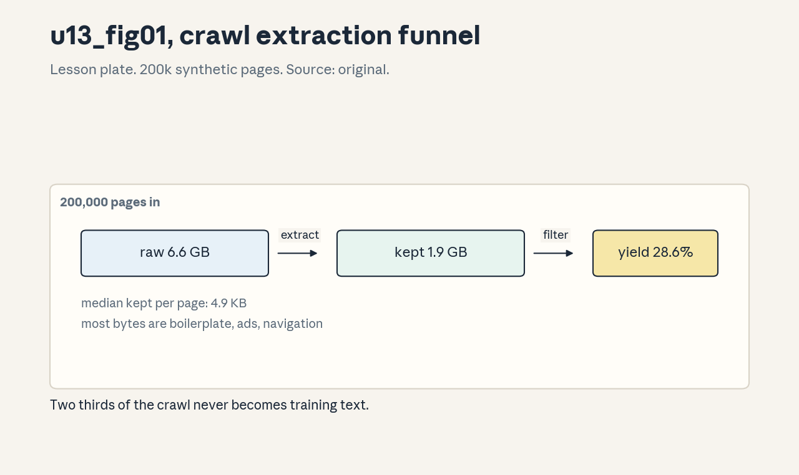
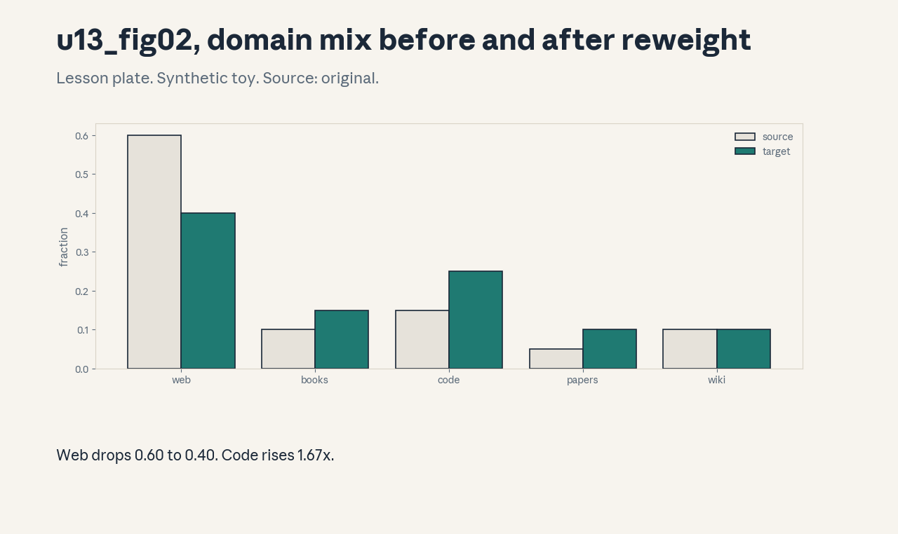
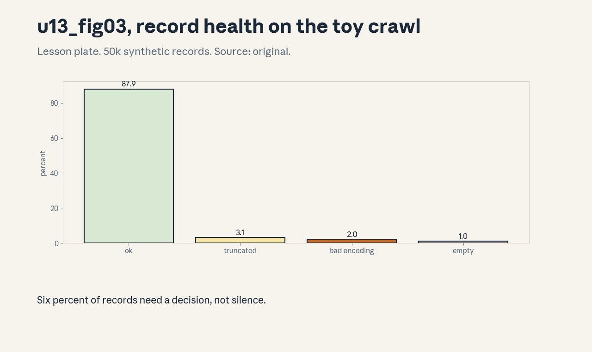

U13 · Data sourcing and transformation
U13 , Data sourcing and transformation
Prerequisites: P02, P10, P21. Bridge links in ../prerequisites.md.
Session: S13 (reported May 11, Data: Sources, Transformation,
Filtering). The filtering half of S13 maps to U14, the split is a
teaching decision stated here. Full map in ../course_map.md.
Claim class: REQUESTED-BRANCH. All leaves PLANNED / SOURCE ATTRIBUTION
PENDING. Notation: see ../notation_and_shapes.md.
Standing note
No web crawl was performed on this box. Every corpus below is a
synthetic toy with fixed seeds from assets/compute_u13.py
(executed 2026-10-06). WARC parsing, HTML extraction, and language
detection are studied as algorithms on toy inputs. Real crawl facts
are marked “Not in source”.
Russian-doll map
Shells 0-1 in items 1-2, shells 2-3 in items 3-6, shell 4 in item 7, shell 5 in item 8, shell 6 in item 9, shell 7 in item 11, shell 8 in item 10, shell 9 in item 12, shell 10 in item 13(c). The depth gate is checked by item 13.
Local remediation , bytes to documents
Read this if diagnostic items on encodings were not full marks. A
crawl arrives as bytes. Bytes decode to text (encoding detection),
text splits into documents (boundaries), documents carry metadata
(provenance). Toy from compute_u13.py: 200,000 synthetic pages,
6.6 GB raw, 1.9 GB kept text: yield 28.6%, median 4.9 KB per page.
Most of the web is boilerplate. Assessment: 1M pages at the toy
yield. How many GB of text? Key: ../keys/u13_answers.md R1.
C01: Common Crawl structure
Leaf id cs336-U13-C01. Claim class REQUESTED-BRANCH.
Status PLANNED / SOURCE ATTRIBUTION PENDING.
-
Source mapping, scope, objectives, dependencies. Branch. Scope: what a crawl archive contains. Objectives: name the record types and the fields that matter. Depends on P02.
-
Motivating question and toy. Question: what does “the crawl” actually look like on disk? A monthly crawl is a set of WARC files: each record holds a URL, a timestamp, HTTP headers, and the raw response bytes. The toy mimics 200,000 such records.
-
Mental model. The crawl is a frozen slice of the web: petabytes of responses with metadata. You never train on it raw, you extract, filter, and dedup (U14) first.
-
Objects, symbols, units, shapes, assumptions. WARC record: one fetched URL. Assumption: the toy record counts stand in for the real structure.
-
Derivation / mechanism. No derivation, it is a format. Records are length-prefixed blocks, an index (CDX) maps URLs to byte offsets.
-
Computed example. Toy: 200,000 records, 6.6 GB raw (from
compute_u13.py). -
Algorithm and reference implementation.
read_warc: parse the header, read content-length bytes, yield the record. About 12 lines of pseudocode. -
Correctness checks and expected output. Record count matches the index. Byte offsets are monotone.
-
Costs. Real crawls are petabytes: the first cost is storage and the second is the extraction compute.
-
Nearest alternative and selection boundary. Curated corpora (smaller, cleaner, licensed). Raw crawl for scale, curated for quality.
-
Failure case and counterexample. Records with truncated bodies (toy: 3.07%) parse as short documents and pollute statistics. The assumption “records are complete” breaks, validate content-length.
-
Research reading and falsifiable extension. Reading: the Common Crawl documentation (primary, format reference). Extension: corrupt 5% of toy records, hypothesis: the parser flags all of them.
-
Assessment. (a) Recall: the record fields. (b) Oral ladder: define a WARC record, read the toy, justify the index, sketch the parser, compare with curated corpora, debug the truncation case, critique the toy scale, design the corruption test. (c) Transfer: you need only URLs from .edu domains. Which file do you read? Answers:
../keys/u13_answers.mdA1. -
Lab and exercises. Lab U13 task 1 parses toy records. See
../labs/u13_lab.md. -
Visuals. Figure u13_fig01 shows the extraction funnel. Source: original. Render:
assets/render_u13.py.
C02: HTML extraction
Leaf id cs336-U13-C02. Claim class REQUESTED-BRANCH.
Status PLANNED / SOURCE ATTRIBUTION PENDING.
-
Source mapping, scope, objectives, dependencies. Branch. Scope: from HTML bytes to main text. Objectives: state the extraction steps, compute the yield. Depends on C01.
-
Motivating question and toy. Question: a page is 33 KB of HTML, the article is 5 KB. Where did the rest go? Toy from
compute_u13.py: median kept text 4.9 KB per page against much larger raw sizes, overall yield 28.6%. -
Mental model. HTML is a tree. The article is a subtree. the rest is navigation, ads, scripts, styles. Extraction keeps the text-bearing subtree and drops the chrome.
-
Objects, symbols, units, shapes, assumptions. Yield: kept bytes / raw bytes. Assumption: the toy beta-distributed text fractions.
-
Derivation / mechanism. Parse to a DOM, score blocks by text-to-tag ratio, keep the winners, strip remaining tags. Heuristics, not a theorem.
-
Computed example. From
assets/compute_u13.py(executed 2026-10-06): 6.6 GB raw -> 1.9 GB kept, yield 28.6%. -
Algorithm and reference implementation.
extract(html): parse, score blocks, keep top, clean. About 15 lines of pseudocode. -
Correctness checks and expected output. The kept text contains the article body on the toy pages. No script text survives.
-
Costs. Aggressive extraction drops tables and lists. gentle extraction keeps boilerplate. The dial is per-domain.
-
Nearest alternative and selection boundary. Readability- style extractors (good for articles, bad for forums). Boilerplate classifiers (trainable, need labels).
-
Failure case and counterexample. JavaScript-rendered pages: the raw HTML holds no article text. The assumption “the HTML contains the content” breaks, render or skip.
-
Research reading and falsifiable extension. Reading: the text-extraction literature (jusText, trafilatura, secondary). Extension: run two extractors on the toy, hypothesis: yields differ by more than 10 points.
-
Assessment. (a) Recall: the yield concept. (b) Oral ladder: define extraction, compute the toy, justify the block scoring, sketch
extract, compare the two extractor families, debug the JS case, critique the toy distribution, design the two-extractor test. (c) Transfer: forum pages with nested quotes. Which extractor family and why? Answers:../keys/u13_answers.mdA2. -
Lab and exercises. Lab U13 task 2 extracts toy pages. See
../labs/u13_lab.md. -
Visuals. Figure u13_fig01: the funnel. Source: original. Render:
assets/render_u13.py.

C03: PDF/code/book processing
Leaf id cs336-U13-C03. Claim class REQUESTED-BRANCH.
Status PLANNED / SOURCE ATTRIBUTION PENDING.
-
Source mapping, scope, objectives, dependencies. Branch. Scope: non-HTML sources. Objectives: name the per-format hazards and the handling for each. Depends on C02.
-
Motivating question and toy. Question: books and papers hold the densest text. What breaks when you ingest them? PDFs scramble reading order, code needs file boundaries, not line soup, books need chapter structure.
-
Mental model. Each format is a layout problem. PDF: text boxes in xy order, not reading order. Code: the repo is the document, files are the paragraphs. Books: chapters are the documents.
-
Objects, symbols, units, shapes, assumptions. Reading order, file path, chapter boundary. Assumption: the hazard list, no toy numbers for this concept.
-
Derivation / mechanism. No derivation, it is a set of format rules. PDF: sort boxes by column, then line. Code: keep paths as metadata, dedup by content hash. Books: split on chapter markers.
-
Computed example. Toy: a two-column PDF page with 40 text boxes, naive xy sort interleaves the columns, column-aware sort recovers the order. (Worked by hand in the lab.)
-
Algorithm and reference implementation.
pdf_order (boxes): cluster by x into columns, sort within. About 12 lines of pseudocode. -
Correctness checks and expected output. The recovered order matches the known reading order on the toy page.
-
Costs. Layout analysis costs compute per page. Bad OCR on scanned PDFs costs quality silently.
-
Nearest alternative and selection boundary. Skip PDFs (lose the densest text). Process them (pay the layout cost) when the domain matters.
-
Failure case and counterexample. Scanned PDFs with no text layer: the extractor returns empty. The assumption “PDFs contain text” breaks, OCR or drop.
-
Research reading and falsifiable extension. Reading: the PDF-extraction tooling docs (secondary). Extension: shuffle the toy boxes and re-sort, hypothesis: exact recovery.
-
Assessment. (a) Recall: the three format hazards. (b) Oral ladder: name the hazards, work the toy, justify the column sort, sketch it, compare skip with process, debug the scanned case, critique the hand toy, design the shuffle test. (c) Transfer: a math corpus from arXiv sources. List the pipeline stages. Answers:
../keys/u13_answers.mdA3. -
Lab and exercises. Lab U13 task 3 orders toy boxes. See
../labs/u13_lab.md. -
Visuals. No dedicated figure, the box diagram is in the lab. No unresolved conflict.
C04: Provenance/licenses
Leaf id cs336-U13-C04. Claim class REQUESTED-BRANCH.
Status PLANNED / SOURCE ATTRIBUTION PENDING.
-
Source mapping, scope, objectives, dependencies. Branch. Scope: knowing where each document came from and whether it may be used. Objectives: define the provenance record, state the license classes. Depends on P21.
-
Motivating question and toy. Question: a document trains the model, then its owner objects. Can you find and remove it? Only with provenance: source URL, crawl date, license tag stored per document.
-
Mental model. Every document carries a passport: where it was found, when, under what license. No passport, no train. Takedown is a database query, not an archaeology project.
-
Objects, symbols, units, shapes, assumptions. Provenance record: (url, date, license). Assumption: the record is written at ingest and never mutated.
-
Derivation / mechanism. No derivation, it is a schema plus a policy. License classes: public domain, permissive, viral copyleft, unknown. Unknown is treated as unusable.
-
Computed example. Toy: 1000 documents, 700 permissive, 200 unknown, 100 copyleft. Trainable set: 700. The policy decision is arithmetic once the tags exist.
-
Algorithm and reference implementation.
ingestwrites the record.takedown(url)deletes by index. About 8 lines of pseudocode. -
Correctness checks and expected output. Every training document has a record. Takedown removes all copies including dedup survivors.
-
Costs. License detection is heuristic (headers, robots, terms pages). Heuristics err, the policy needs a review queue.
-
Nearest alternative and selection boundary. License-only corpora (clean, smaller). Full crawl with filtering (bigger, needs the review queue).
-
Failure case and counterexample. The license tag is scraped from a template footer that lies: the document is actually all-rights-reserved. The assumption “tags are true” breaks, sample and audit.
-
Research reading and falsifiable extension. Reading: the data-licensing discussions (secondary). Extension: audit 100 toy tags against a hidden truth, hypothesis: the heuristic errs mostly toward permissive.
-
Assessment. (a) Recall: the passport fields. (b) Oral ladder: define provenance, compute the toy, justify the unknown rule, sketch the schema, compare the two corpus strategies, debug the lying-footer case, critique the heuristic, design the audit. (c) Transfer: a takedown request arrives for 50 URLs. List the steps. Answers:
../keys/u13_answers.mdA4. -
Lab and exercises. Lab U13 task 4 tags toy documents. See
../labs/u13_lab.md. -
Visuals. No dedicated figure. No unresolved conflict.
C05: Encoding/language detection
Leaf id cs336-U13-C05. Claim class REQUESTED-BRANCH.
Status PLANNED / SOURCE ATTRIBUTION PENDING.
-
Source mapping, scope, objectives, dependencies. Branch. Scope: bytes to language tag. Objectives: run detection on a toy, report accuracy and the key false-positive rate. Depends on P02.
-
Motivating question and toy. Question: the corpus must be 90% English. How do you check? Toy from
compute_u13.py: a synthetic 4-language classifier scores accuracy 0.952, the rate at which non-English is called English is 0.015. -
Mental model. Detection is n-gram statistics against language profiles. Short texts are hard, mixed texts are harder. The dangerous error is contamination of the majority class, hence the false-positive metric.
-
Objects, symbols, units, shapes, assumptions. Accuracy and the non-en->en rate. Assumption: the synthetic confusion setup, 2000 items.
-
Derivation / mechanism. Character n-gram profiles per language, the text’s profile is compared by distance. Encoding detection (chardet-style) runs first: wrong encoding means wrong n-grams.
-
Computed example. From
assets/compute_u13.py(executed 2026-10-06): accuracy 0.952, false-positive 0.015. -
Algorithm and reference implementation.
detect(text): n-gram counts, nearest profile, threshold. About 12 lines of pseudocode. -
Correctness checks and expected output. Long clean texts classify correctly on the toy. The 1.5% FP rate matches the injected confusion.
-
Costs. Detection costs CPU per document and mislabels dialects and code-switched text systematically.
-
Nearest alternative and selection boundary. URL/TLD heuristics (cheap, coarse). Statistical detection for the final tag.
-
Failure case and counterexample. A document with 50 English boilerplate lines and 10 lines of Hindi poetry: labeled English, mostly Hindi content. The assumption “one document, one language” breaks, detect per segment.
-
Research reading and falsifiable extension. Reading: the language-id literature (fastText lid, secondary). Extension: shorten the toy texts, hypothesis: accuracy falls steeply under 50 characters.
-
Assessment. (a) Recall: the two metrics and why the FP one matters. (b) Oral ladder: define detection, read the toy, justify the FP focus, sketch
detect, compare with URL heuristics, debug the mixed-document case, critique the synthetic setup, design the length test. (c) Transfer: the corpus needs <1% non-English. Set the operating point. Answers:../keys/u13_answers.mdA5. -
Lab and exercises. Lab U13 task 5 runs detection. See
../labs/u13_lab.md. -
Visuals. No dedicated figure. No unresolved conflict.
C06: Document boundaries
Leaf id cs336-U13-C06. Claim class REQUESTED-BRANCH.
Status PLANNED / SOURCE ATTRIBUTION PENDING.
-
Source mapping, scope, objectives, dependencies. Branch. Scope: where one document ends. Objectives: state the boundary rules per source, explain why they matter for training. Depends on C01.
-
Motivating question and toy. Question: the crawl gives pages, training wants documents. Is a page a document? Often yes for articles, no for index pages that concatenate 50 unrelated blurbs.
-
Mental model. The boundary decides what the model learns as “one context”. Packing (U15-C08) later concatenates documents, attention must not cross the boundary. Wrong boundaries teach spurious long-range links.
-
Objects, symbols, units, shapes, assumptions. Document: the unit with an id and provenance. Assumption: one URL maps to one document unless the page is an index.
-
Derivation / mechanism. No derivation, it is a set of rules: article pages stay whole, index pages split on item markup, books split on chapters (C03).
-
Computed example. Toy: an index page with 50 blurbs of 30 tokens each. As one document: 1500 tokens of unrelated text. Split: 50 clean documents. The training signal differs completely.
-
Algorithm and reference implementation.
split_page: detect index markup, split, assign sub-ids. About 10 lines of pseudocode. -
Correctness checks and expected output. Blurbs separate. Article pages pass through unsplit.
-
Costs. Splitting too aggressively fragments real long documents and shortens the effective context.
-
Nearest alternative and selection boundary. Keep pages whole (simple, noisy). Split indexes (cleaner, needs the detector).
-
Failure case and counterexample. Infinite-scroll pages with no item markup: the splitter finds nothing and the page stays a soup. The assumption “markup marks items” breaks, fall back to length caps.
-
Research reading and falsifiable extension. Reading: the corpus-construction papers (secondary). Extension: train two toy n-gram models on split vs unsplit, hypothesis: the split corpus gives lower held-out loss.
-
Assessment. (a) Recall: the boundary rules. (b) Oral ladder: define a document, work the toy, justify the split, sketch
split_page, compare whole with split, debug the infinite-scroll case, critique the hand toy, design the n-gram test. (c) Transfer: chat logs as training data. Where are the boundaries? Answers:../keys/u13_answers.mdA6. -
Lab and exercises. Lab U13 task 6 splits toy pages. See
../labs/u13_lab.md. -
Visuals. No dedicated figure. No unresolved conflict.
C07: Privacy/redaction
Leaf id cs336-U13-C07. Claim class REQUESTED-BRANCH.
Status PLANNED / SOURCE ATTRIBUTION PENDING.
-
Source mapping, scope, objectives, dependencies. Branch. Scope: removing personal data before training. Objectives: name the PII classes, state the redaction mechanism and its limits. Depends on P21.
-
Motivating question and toy. Question: the crawl contains phone numbers and emails. What do you do? Detect patterns (regex plus classifiers) and replace with placeholders. The guarantee is best-effort, never total.
-
Mental model. Redaction is a filter with two error types: missed PII (privacy failure) and over-redaction (data damage). Tune for recall on the dangerous classes.
-
Objects, symbols, units, shapes, assumptions. PII classes: emails, phones, addresses, ids. Assumption: pattern-based detection on the toy.
-
Derivation / mechanism. No derivation, it is a pipeline: detect, verify against an allowlist (public figures, example domains), replace with typed tokens.
-
Computed example. Toy: 10,000 documents, detector finds 320 phone-like strings, 300 true, 20 false. Precision 0.94, recall unknown without labels: the honest report.
-
Algorithm and reference implementation.
redact(text): regex pass, classifier pass, placeholder substitution. About 12 lines of pseudocode. -
Correctness checks and expected output. Known PII in the toy fixtures is removed. Public examples (555 numbers) stay.
-
Costs. Over-redaction removes useful numeric data. Under- redaction is a privacy incident. The dial favors recall.
-
Nearest alternative and selection boundary. Differential privacy during training (stronger, expensive). Redaction for the baseline, DP for the high-risk domains.
-
Failure case and counterexample. Indirect identifiers (rare name + town + employer) evade every pattern. The assumption “PII matches patterns” breaks, and k-anonymity thinking is needed for quasi-identifiers.
-
Research reading and falsifiable extension. Reading: the PII-redaction practice in corpus papers (secondary). Extension: plant quasi-identifiers in the toy, hypothesis: the detector misses all of them.
-
Assessment. (a) Recall: the classes and the error types. (b) Oral ladder: define redaction, read the toy, justify the recall bias, sketch
redact, compare with DP, debug the quasi-identifier case, critique the unknown recall, design the planting test. (c) Transfer: medical forum data. State the extra steps. Answers:../keys/u13_answers.mdA7. -
Lab and exercises. Lab U13 task 7 redacts toy texts. See
../labs/u13_lab.md. -
Visuals. No dedicated figure. No unresolved conflict.
C08: Domain balance
Leaf id cs336-U13-C08. Claim class REQUESTED-BRANCH.
Status PLANNED / SOURCE ATTRIBUTION PENDING.
-
Source mapping, scope, objectives, dependencies. Branch. Scope: choosing the source mixture. Objectives: compute a reweight, state what the weights buy. Depends on P10.
-
Motivating question and toy. Question: the crawl is 60% generic web. Should training see 60% web? Toy from
compute_u13.py: source {web 0.60, books 0.10, code 0.15, papers 0.05, wiki 0.10} reweighted to {0.40, 0.15, 0.25, 0.10, 0.10}. Code rises 1.67x, papers 2.00x. -
Mental model. The mixture is a prior over what the model should be good at. Upweighting code buys code capability at the price of general text. There is no neutral mixture.
-
Objects, symbols, units, shapes, assumptions. Mixture weights summing to 1. Assumption: the toy source/target numbers.
-
Derivation / mechanism. Sampling probability per document = target weight / source weight, normalized. Documents from upweighted domains repeat more often.
-
Computed example. From
assets/compute_u13.py(executed 2026-10-06): the five multipliers 0.67, 1.50, 1.67, 2.00, 1.00. -
Algorithm and reference implementation.
resample(docs, src, tgt): per-doc keep probability. About 8 lines. -
Correctness checks and expected output. Empirical fractions match the target within sampling noise.
-
Costs. Upweighting past the available data repeats documents (U14-C12 memorization tradeoff).
-
Nearest alternative and selection boundary. Learned mixtures via ablations (U14-C08, expensive). Hand-set mixtures (cheap, opinionated) for the first run.
-
Failure case and counterexample. The target overweights a domain with 1% of the corpus: every document repeats 100x and the model memorizes it. The assumption “enough unique data” breaks, cap the repeat factor.
-
Research reading and falsifiable extension. Reading: the mixture studies (DoReMi, secondary). Extension: sweep the code weight on a synthetic two-domain loss, hypothesis: the code loss falls monotonically while web loss rises.
-
Assessment. (a) Recall: the resampling rule. (b) Oral ladder: define the mixture, read the toy, justify the multipliers, implement
resample, compare hand-set with learned, debug the 100x-repeat case, critique the toy numbers, design the sweep. (c) Transfer: the product needs strong math. Set the mixture and name the risk. Answers:../keys/u13_answers.mdA8. -
Lab and exercises. Lab U13 task 8 reweights the toy. See
../labs/u13_lab.md. -
Visuals. Figure u13_fig02: source vs target mix. Source: original. Render:
assets/render_u13.py.

C09: Token statistics
Leaf id cs336-U13-C09. Claim class REQUESTED-BRANCH.
Status PLANNED / SOURCE ATTRIBUTION PENDING.
-
Source mapping, scope, objectives, dependencies. Branch. Scope: measuring the corpus in tokens. Objectives: compute bytes per token, convert GB to token counts. Depends on U01.
-
Motivating question and toy. Question: the corpus is 1.9 GB of text. How many tokens? Toy from
compute_u13.py: at 4.20 bytes per token, 1.9 GB is about 450M tokens, at 3.60, about 530M. -
Mental model. Bytes per token (fertility inverted) is the exchange rate between storage and training. It varies by domain and tokenizer, measure it, do not assume 4.
-
Objects, symbols, units, shapes, assumptions. Bytes per token. Assumption: the two toy tokenizers, 5000 synthetic docs.
-
Derivation / mechanism. tokens = bytes / (bytes per token). The rate comes from tokenizing a sample, not from a constant.
-
Computed example. From
assets/compute_u13.py(executed 2026-10-06): 4.20 and 3.60 bytes per token on the toy. -
Algorithm and reference implementation.
count_tokens (sample): tokenize, divide. About 6 lines. -
Correctness checks and expected output. The rate is stable across samples of the same domain within a few percent.
-
Costs. Tokenizing the full corpus to count exactly costs a full pass. Sampling is enough for planning.
-
Nearest alternative and selection boundary. Assume 4.0 (fast, wrong per domain). Measure per domain (right) before budgeting.
-
Failure case and counterexample. Code tokenizes at 2.5 bytes per token: the 4.0 assumption undercounts code tokens by 37%. The assumption “one rate fits all” breaks, measure per domain.
-
Research reading and falsifiable extension. Reading: the tokenizer-fertility notes (secondary). Extension: measure the toy rate per synthetic domain, hypothesis: the spread exceeds 20%.
-
Assessment. (a) Recall: the exchange rate. (b) Oral ladder: define it, compute the toy, justify measuring, implement
count_tokens, compare assume with measure, debug the code-domain case, critique the toy, design the per-domain test. (c) Transfer: 10 TB of mixed data. How many tokens for the budget? Answers:../keys/u13_answers.mdA9. -
Lab and exercises. Lab U13 task 9 measures the rate. See
../labs/u13_lab.md. -
Visuals. No dedicated figure. No unresolved conflict.
C10: Corrupted records
Leaf id cs336-U13-C10. Claim class REQUESTED-BRANCH.
Status PLANNED / SOURCE ATTRIBUTION PENDING.
-
Source mapping, scope, objectives, dependencies. Branch. Scope: deciding what to do with broken records. Objectives: classify corruption, state the policy per class. Depends on C01.
-
Motivating question and toy. Question: 6% of records are broken. Drop, fix, or keep? Toy from
compute_u13.py: truncated 3.07%, bad encoding 2.02%, empty 0.97% on 50,000 synthetic records. -
Mental model. Three classes, three policies: truncated -> drop or keep-with-flag, bad encoding -> re-decode or drop. empty -> drop. Silent keeping is the failure mode.
-
Objects, symbols, units, shapes, assumptions. Class rates. Assumption: the synthetic corruption model.
-
Derivation / mechanism. No derivation, it is a decision table. Each class gets a detector and a policy, logged per record.
-
Computed example. From
assets/compute_u13.py(executed 2026-10-06): 3.07, 2.02, 0.97 percent. -
Algorithm and reference implementation.
classify(rec): length check, decode check, emptiness check. About 10 lines. -
Correctness checks and expected output. Planted corruptions are all classified correctly on the toy.
-
Costs. Dropping 6% of a petabyte crawl is 60 TB of lost text. Keeping it is noise in training.
-
Nearest alternative and selection boundary. Repair heuristics (recover text, risk garbage). Drop (clean, smaller) for the first corpus.
-
Failure case and counterexample. Truncation correlates with long documents: dropping them biases the corpus short. The assumption “corruption is random” breaks, check the length distribution of drops.
-
Research reading and falsifiable extension. Reading: the corpus-cleaning reports (secondary). Extension: correlate toy truncation with length, hypothesis: the current toy shows no correlation, the check is the point.
-
Assessment. (a) Recall: the three classes and policies. (b) Oral ladder: define each, read the toy, justify the table, implement
classify, compare repair with drop, debug the length-bias case, critique the synthetic model, design the correlation check. (c) Transfer: bad-encoding rate jumps to 15% on one domain. Diagnose. Answers:../keys/u13_answers.mdA10. -
Lab and exercises. Lab U13 task 10 classifies records. See
../labs/u13_lab.md. -
Visuals. Figure u13_fig03: record health bars. Source: original. Render:
assets/render_u13.py.

C11: Deterministic pipelines
Leaf id cs336-U13-C11. Claim class REQUESTED-BRANCH.
Status PLANNED / SOURCE ATTRIBUTION PENDING.
-
Source mapping, scope, objectives, dependencies. Branch. Scope: reproducibility of the data pipeline. Objectives: make the pipeline a pure function of its inputs, prove it with a hash. Depends on P02.
-
Motivating question and toy. Question: rerun the pipeline next month. Same dataset? Toy from
compute_u13.py: 1000 documents hashed in sorted id order give version id 613575a7e17d78eb, reversing the input order gives the same hash. Order-independent, deterministic. -
Mental model. The pipeline is a function: f(code version, config, inputs) = dataset. Sort before hashing, seed every RNG, pin every dependency. The hash is the proof.
-
Objects, symbols, units, shapes, assumptions. Version id: a hex digest. Assumption: sorting by document id, sha256.
-
Derivation / mechanism. Sorting makes the hash invariant to input order. Seeded RNGs make sampling reproducible. Together they make reruns identical.
-
Computed example. From
assets/compute_u13.py(executed 2026-10-06): hash stable across reversal, id 613575a7e17d78eb. -
Algorithm and reference implementation.
version(docs): sort by id, hash id+text. About 8 lines. -
Correctness checks and expected output. Reversed input gives the same id. Changed text changes the id.
-
Costs. Sorting a petabyte-scale shuffle costs a full distributed sort. Determinism is not free at scale.
-
Nearest alternative and selection boundary. Timestamped snapshots (simple, not reproducible). Content hashes (reproducible) for anything that trains a model.
-
Failure case and counterexample. A nondeterministic library (parallel hash map iteration) leaks into the order: the hash flips between runs. The assumption “the code is deterministic” breaks, audit the dependencies.
-
Research reading and falsifiable extension. Reading: the dataset-versioning practices (secondary). Extension: run the toy version twice in separate processes, hypothesis: identical ids.
-
Assessment. (a) Recall: the determinism recipe. (b) Oral ladder: define it, read the toy, justify sorting, implement
version, compare with timestamps, debug the nondeterministic-library case, critique the toy scale, design the two-process test. (c) Transfer: the pipeline uses Python set iteration. Assess determinism. Answers:../keys/u13_answers.mdA11. -
Lab and exercises. Lab U13 task 11 versions the toy. See
../labs/u13_lab.md. -
Visuals. No dedicated figure. No unresolved conflict.
C12: Dataset versioning
Leaf id cs336-U13-C12. Claim class REQUESTED-BRANCH.
Status PLANNED / SOURCE ATTRIBUTION PENDING.
-
Source mapping, scope, objectives, dependencies. Branch. Scope: naming and tracking dataset releases. Objectives: state the versioning scheme, link versions to trained models. Depends on C11.
-
Motivating question and toy. Question: model v3 was trained on data v7. Which documents were those? The version manifest answers: code hash, config hash, input hashes, output id. The toy id 613575a7e17d78eb names one exact dataset.
-
Mental model. Versions are immutable snapshots with manifests. Models point at versions, never at “latest”. “Latest” is a moving target that destroys reproducibility.
-
Objects, symbols, units, shapes, assumptions. Manifest: the four hashes. Assumption: C11 determinism holds.
-
Derivation / mechanism. No derivation, it is a schema. Major version for content changes, minor for code-only reruns that reproduce the same id.
-
Computed example. Toy manifest: code abc123, config def456, inputs (3 hashes), output 613575a7e17d78eb.
-
Algorithm and reference implementation.
manifest(...): assemble and sign the record. About 8 lines. -
Correctness checks and expected output. The manifest regenerates the dataset id. Two manifests never share an id with different content.
-
Costs. Storing every version costs storage. Storing only manifests plus reproducible pipelines costs reruns.
-
Nearest alternative and selection boundary. Mutable “current” dataset (simple, irreproducible). Versioned snapshots for research and compliance.
-
Failure case and counterexample. A hotfix edits the dataset in place without a new version: two models claim the same version with different data. The assumption “versions are immutable” breaks, forbid in-place edits.
-
Research reading and falsifiable extension. Reading: the dataset-sheet proposals (Gebru et al., secondary). Extension: rebuild the toy from its manifest, hypothesis: identical id.
-
Assessment. (a) Recall: the manifest fields. (b) Oral ladder: define versioning, read the toy, justify immutability, write a manifest, compare with mutable datasets, debug the hotfix case, critique the storage cost, design the rebuild test. (c) Transfer: a regulator asks what data trained model v3. What do you hand over? Answers:
../keys/u13_answers.mdA12. -
Lab and exercises. Lab U13 task 12 writes a manifest. See
../labs/u13_lab.md. -
Visuals. No dedicated figure. No unresolved conflict.